CHARACTERS
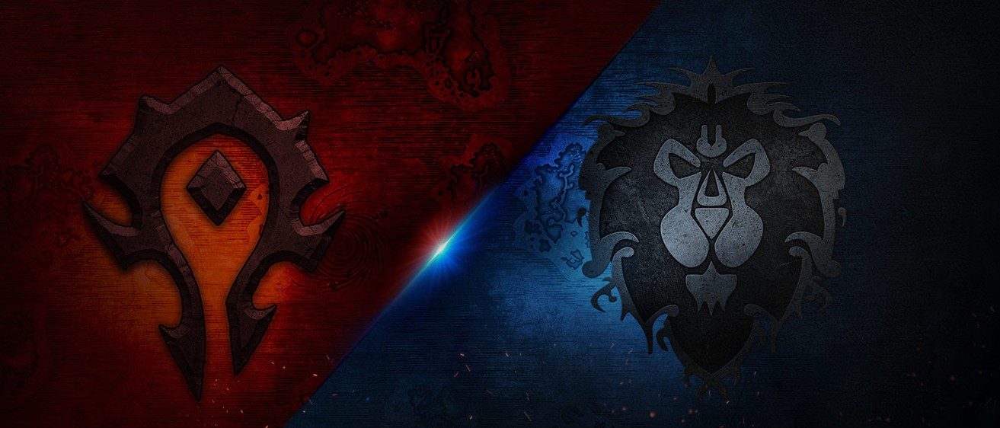
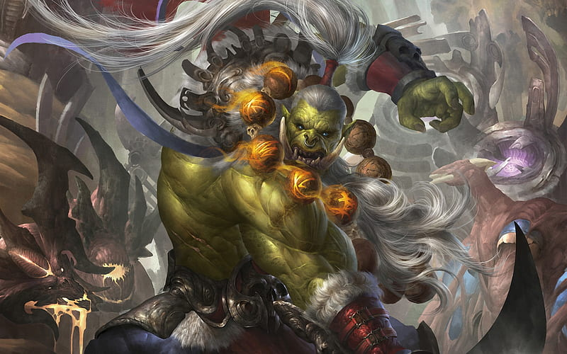
Orcs
The orcs originally hail from Draenor, a world filled with life and magical energy. In their early days, they were a shamanic race, living in harmony with nature and its elements. The orcs' history becomes complicated when the Burning Legion, a demonic force, manipulates their leaders into drinking the blood of the demon Mannoroth. This corrupts the orcs, making them more violent and power-hungry, and eventually leads them to invade Azeroth through the Dark Portal.
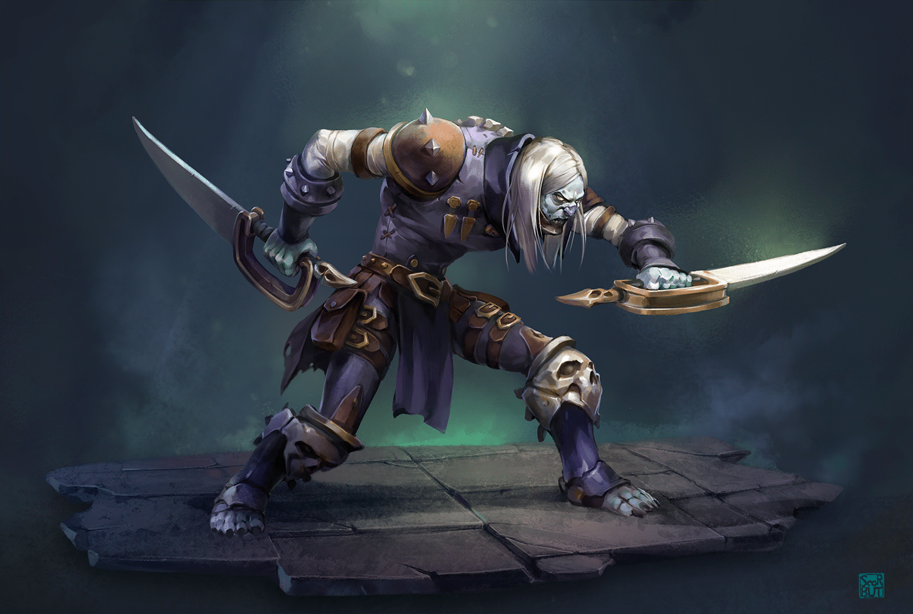
Undeads
The undeads, also known as Forsaken, were originally living inhabitants of Lordaeron, a region of the human kingdom on the Eastern Kingdoms continent. During the Third War, the Lich King resurrected these humans as undead, subjecting them to his control. The rebellion of Sylvanas Windrunner and other Undead against the Lich King's control led to the creation of the Forsaken. Under Sylvanas' leadership, they achieved independence and established their own faction, joining the Horde.
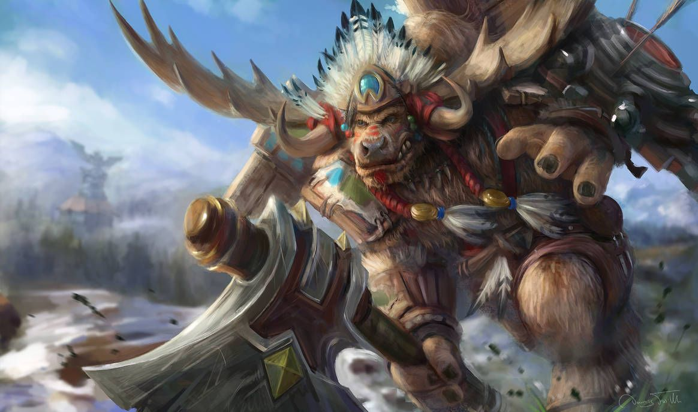
Tauren
The taurens are native to the continent of Kalimdor, and before the founding of the Horde, lived in nomadic tribes that roamed the vast plains of Mulgore. They were a people at one with nature, guided by the shamanic wisdom and teachings of their spiritual leader, High Chief Cairne Bloodhoof. When the Horde came to Kalimdor, the tauren formed an alliance with Thrall and the orcs to fight the centaurs, a constant threat to the tauren tribes.
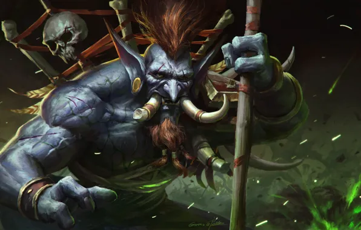
Trolls
Trolls are one of the oldest races in Azeroth, with roots going back to the ancient civilizations of the jungle trolls and ice trolls. Among the most famous are the empires of Zandalar and Amani, which once controlled large territories in Azeroth. Trolls of the Darkspear tribe joined the Horde under the leadership of Thrall. This tribe was exiled by other trolls and found in the Horde a place to settle and prosper.
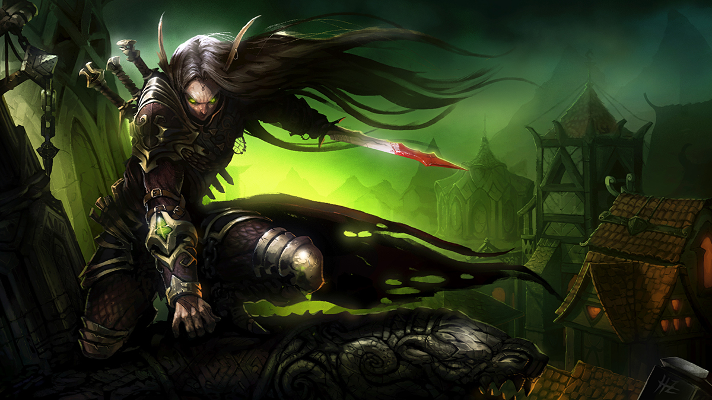
Blood Elves
Blood elves are descended from the high elves, a group of elves who resided in Quel'Thalas, northeast of Lordaeron. The high elves were known for their affinity for arcane magic and their life in the opulent city of Silvermoon. After being rejected by the Alliance, the blood elves joined the Horde, seeking allies to help them rebuild their home and protect their interests. The inclusion of blood elves in the Horde brought new magical skills and knowledge, especially in the realm of arcane magic and mana engineering.
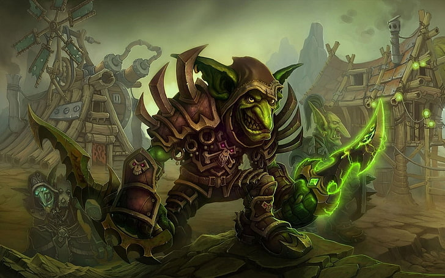
Goblins
Goblins trace their roots to Kezan Island, where they worked as miners for the Zandalari trolls. Originally, they were a primitive race, but their contact with a mysterious mineral called Kaja'mite triggered a rapid evolution of their intelligence and technical skills. The Steamwheedle Cartel joined the Horde after a volcanic eruption on Kezan forced the goblins to abandon the island. After being rescued by Thrall, they allied themselves with the Horde and now bring their technological and trading skills to the group.
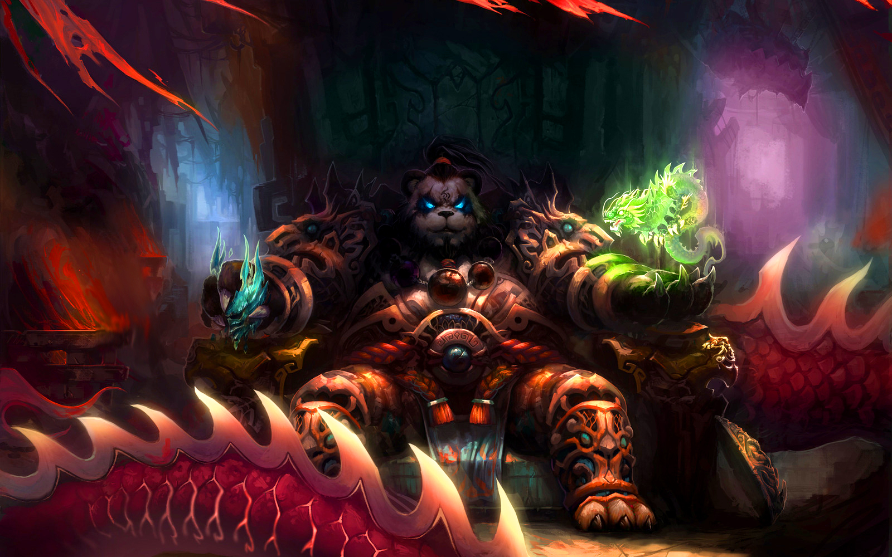
Pandaren
Pandaren hail from Pandaria, a continent isolated for thousands of years by a magical mist, created to protect them from the corruption and conflict of the rest of the world. Pandaria is a lush, biodiverse place, with stunning landscapes and a strong connection to nature and spiritual harmony. After the mist around Pandaria clears, pandaren discover the conflict between the Horde and the Alliance. Some pandaren choose to join one of these factions, while others remain neutral.
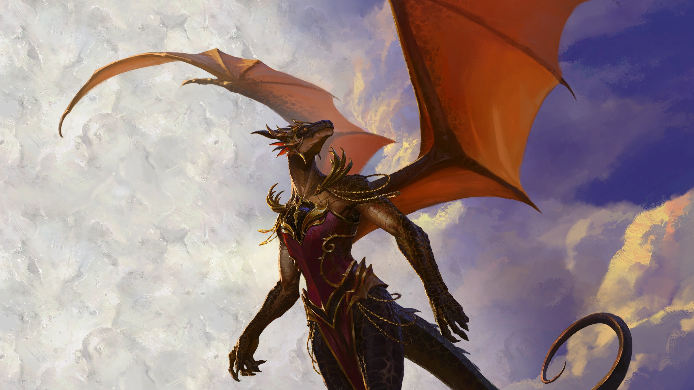
Dracthyrs
Dracthyr are dragon-humanoid creatures created by the Black Dragon Aspect, Neltharion, also known as Deathwing. They were designed as a highly versatile fighting force, combining the abilities of dragons with the flexibility of humanoid races. Dracthyr, upon awakening in a world where both the Horde and Alliance are present, have the option to join one of these factions. This choice reflects their desire to find allies and protect Azeroth from new threats.

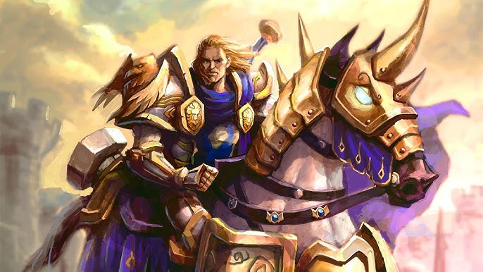
Humans
The humans of Azeroth are descended from the Vrykul, a giant race from the continent of Northrend. Over the centuries, these giant beings evolved and gave rise to the humans. They are a young race compared to others, but one that has had a significant impact on the history of Azeroth. Humans are one of the founding members of the Alliance, a coalition of races that includes dwarves, elves, gnomes, and others. They are a crucial part of this organization, often serving as leaders and ambassadors. The Alliance focuses on justice, fighting corruption, and protecting Azeroth from outside threats.
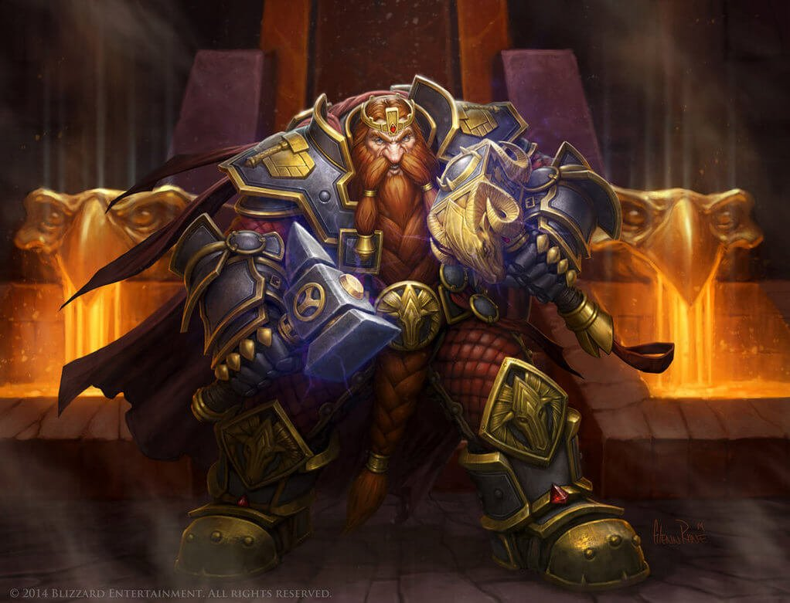
Dwarves
Dwarves descend from the titans, powerful beings who shaped Azeroth in ancient times. The titans created the Vrykul, from which humans are descended, and the Earthen, stone beings who eventually evolved into the dwarves. Dwarves are founding members of the Alliance and play a crucial role in fighting the threats facing Azeroth. Their loyalty and tenacity make them valuable allies to the Alliance, and their connection to the titans gives them a special role in fighting ancient and malevolent forces.
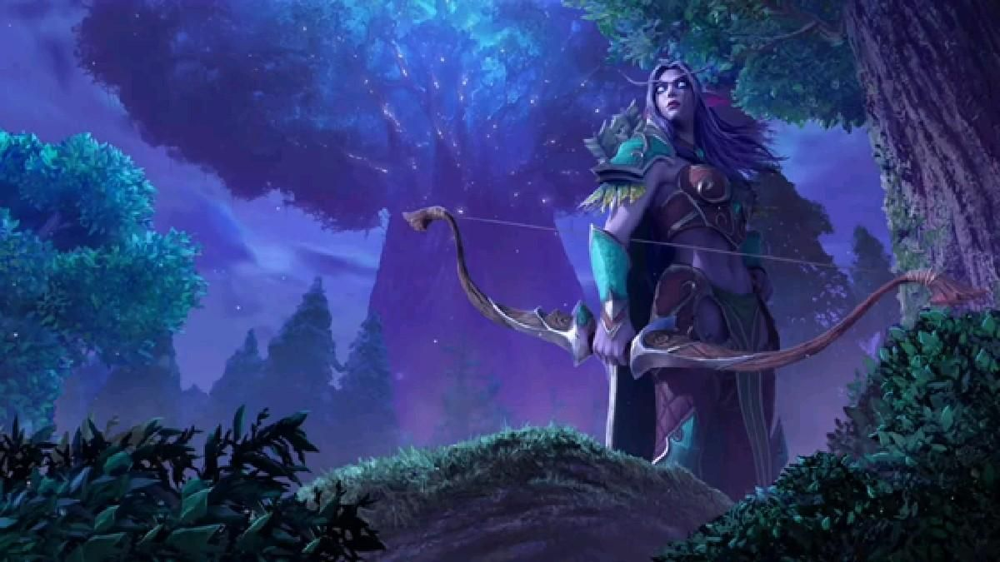
Night Elves
Night elves are one of the oldest races on Azeroth. They descended from dark trolls who settled near the Well of Eternity, a source of great arcane power. Their proximity to the Well transformed these trolls into a race of long-lived, magical elves, who took the name night elves. Night elves joined the Alliance during the Third War to fight the Burning Legion and remained active members thereafter. Their connection to nature and unique abilities bring great diversity to the Alliance.
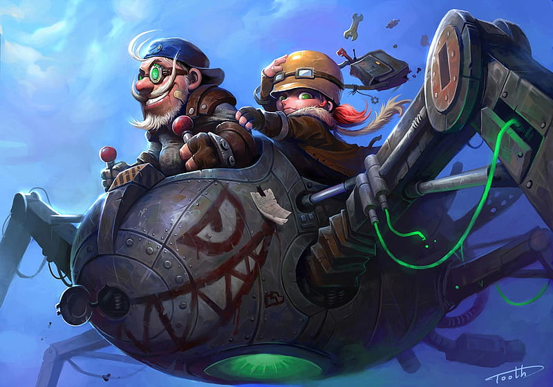
Gnomes
Gnomes are descendants of the "Mechagnomes", mechanical beings created by the titans to maintain titan facilities. Over time, these mechanical beings became more organic due to the "Loss of Flesh", similar to what happened to dwarves and other titan creations. Gnomes are loyal members of the Alliance, providing technology and engineering skills. Their contribution to the Alliance has been vital in many battles, with their engineers building weapons and devices to aid in the fight against greater threats.
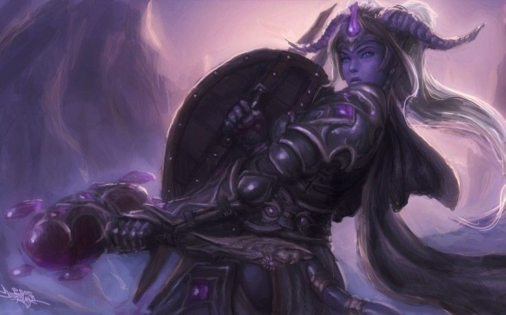
Draeneis
The draeneis are descendants of the eredar, a powerful race that once inhabited their homeworld of Argus. However, when the eredar were tempted by Sargeras, the dark titan and leader of the Burning Legion, some resisted his influence. These renegade eredar became the draenei, and fled Argus aboard a ship called the Exodar. The draenei are important members of the Alliance, bringing with them their wisdom, devotion to the Light, and experience in the fight against the Burning Legion.
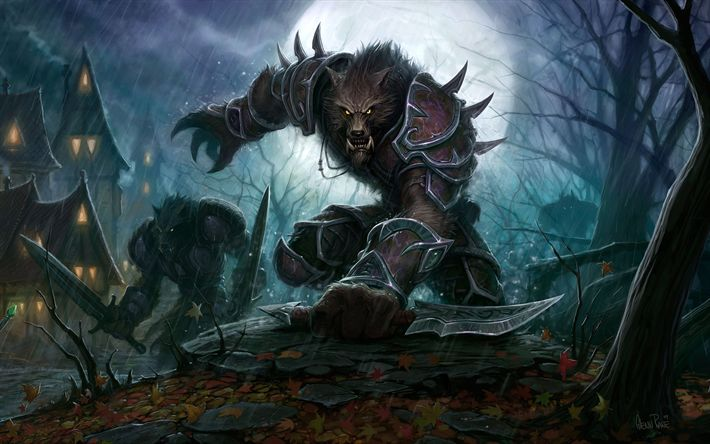
Worgenes
Worgenes were originally humans who succumbed to a curse that transformed them into wolf-humanoid creatures. The curse originated from an ancient druidic ritual performed by the Wolf Druids, a group that worshipped Goldrinn, an ancient wolf god. The ritual unleashed a fierce power that drove the druids into a wild, uncontrollable state. The worgen joined the Alliance after losing Gilneas to the Horde and the forces of Sylvanas Windrunner. The Alliance provided them with shelter and support as they worked to reclaim their home. The worgen brought their strength and ferocity to the Alliance, as well as their knowledge of magic and alchemy.
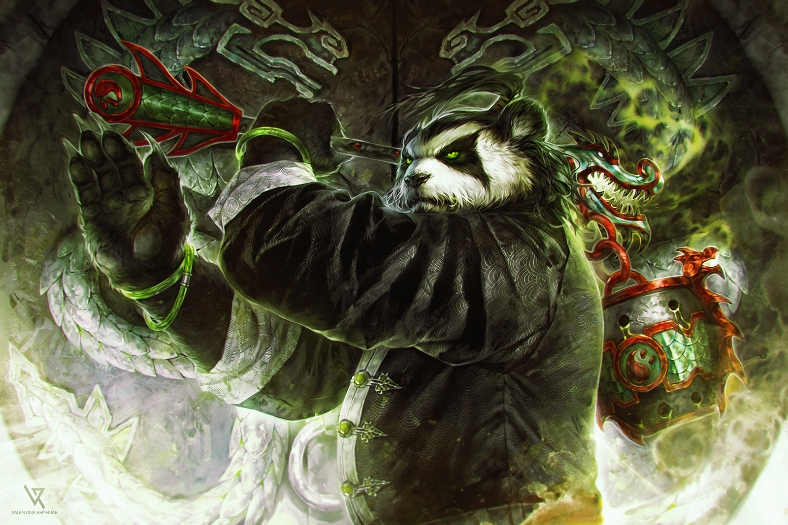
Pandaren
Pandaren hail from Pandaria, a continent isolated for thousands of years by a magical mist created to protect them from the corruption and conflict of the rest of the world. Pandaria is a lush, biodiverse place with stunning landscapes and a strong connection to nature and spiritual harmony. After the mist around Pandaria clears, pandaren discover the conflict between the Horde and the Alliance. Some pandaren choose to join one of these factions, while others remain neutral.

Dracthyr
Dracthyr are dragon-humanoid creatures created by the Black Dragon Aspect, Neltharion, also known as Deathwing. They were designed as a highly versatile fighting force, combining the abilities of dragons with the flexibility of humanoid races. Dracthyr, upon awakening in a world where both the Horde and Alliance are present, have the option to join one of these factions. This choice reflects their desire to find allies and protect Azeroth from new threats.